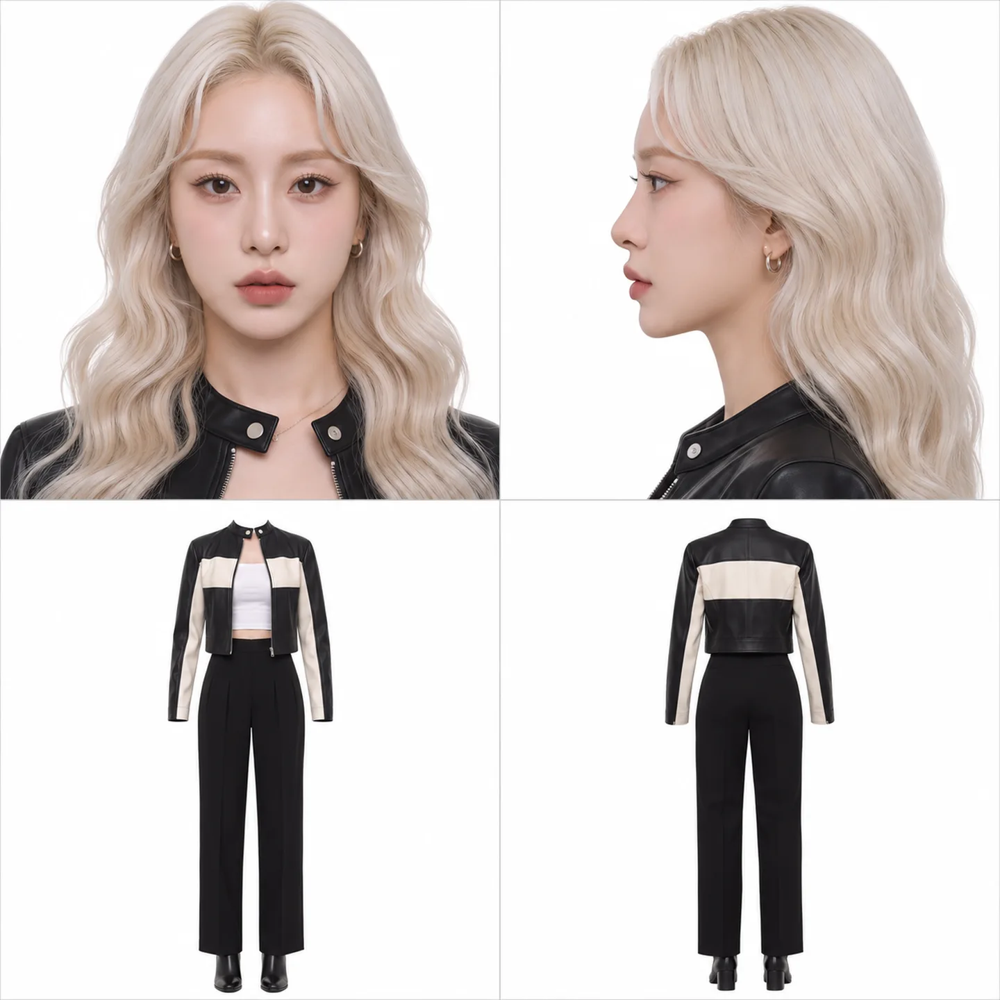
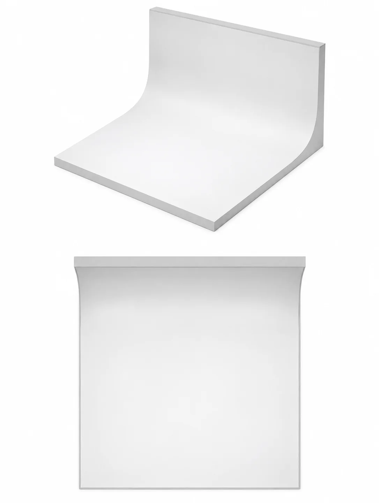
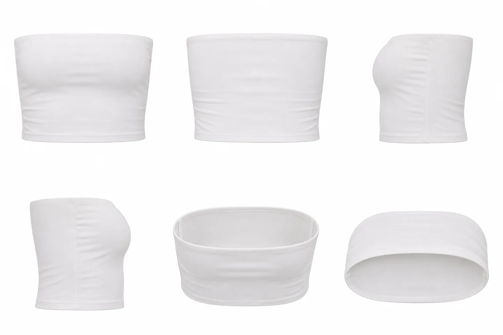
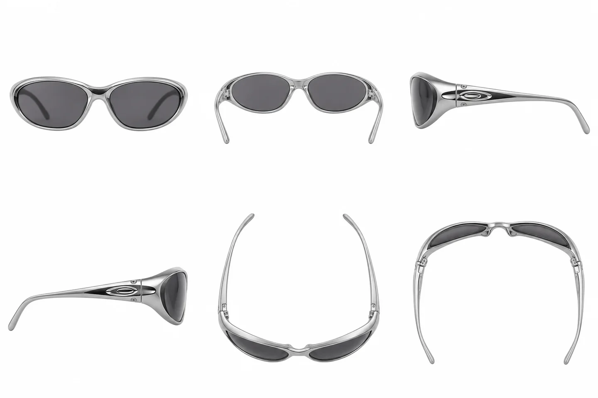
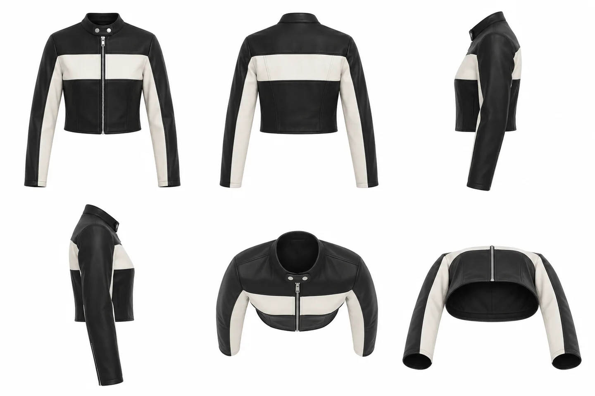
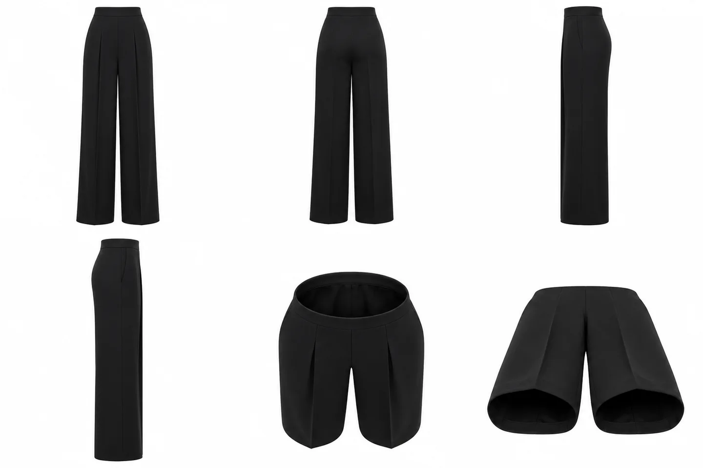

银铬墨镜
AIGC · 产品广告
作品简介
银铬墨镜在白棚内旋转，反光先交代窄椭圆镜片和镜腿的轮廓。接着用模特的正面与侧面佩戴镜头补足产品比例和服装搭配，以深灰镜片上的反光收尾。
制作资产
点击图片放大查看
人物与角色


成年女模特，长波浪银金发，眼部妆容克制。黑白短机车夹克加白色平口内搭和黑色裤装，定妆图上方眼镜取下以展示五官，佩戴后由分镜补足。
场景与布景


场景设定用于「眼镜悬浮显形」段落。眼镜由稍偏前方转向镜腿所在一侧，暗镜片保持洁净。
道具与产品


夹克内的白色平口上装，短款、平顺边、轻弹面料，留出与外套的叠穿空间。


镜框抛光银铬、双片狭长椭圆深灰镜片，外圈偏运动包覆。镜腿从前粗到后细，前段保留流线凹凸，去掉任何文字或品牌。上视要表现镜片弧度，底视保留下缘和镜腿连接。


夹克以黑色与骨白块面拼接，短身、立领和按扣。前后色块连续，背面缝制为依据正面推定。


出镜下装只在中景露出腰部，保留黑色高腰外形，裤腿版型按整体造型补全。